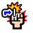

위대한 항로 난이도 패턴
위대한 항로 난이도 패턴
[심] VS 빅 맘 (보스)
Stage 1:
선제 행동:

강인형, 자유형, 격투형 캐릭터의 VS 효과의 게이지를 5 단축

강인형, 자유형, 격투형 캐릭터의 슈퍼 체인지 효과를 5 단축

강인형, 자유형, 격투형 캐릭터의 필살기 턴을 5턴 단축

도주
Stage 2:
초기 상태: 미식기사 슈트로이젠

99턴 동안 일반 공격 이외의 데미지 1

99턴 동안 지연 무효
힘 속성, 기 속성, 속 속성, 지 속성 변화(2개 이상일 경우 랜덤 변화)

5턴 동안 중간단 봉쇄

필살기 턴을 1턴 되돌리기
Stage 3:
초기 상태: 빅 맘
99턴 동안 지연 무효
99턴 동안 일반 공격 이외의 데미지 1

약점 타입: 강인형
5턴 동안 필살기 봉쇄

[공백][힘][기][속][심][지][G][고기][연][폭탄] 슬롯을 [방해] 슬롯으로 변환

3턴 동안 공격력 90% 감소
2턴 동안 체인 계수가 2.25 이하일 경우 공격력 90% 감소
2턴 동안 체인 계수가 3.5 이상일 경우 공격력 90% 감소
격파 시 행동:
80000 데미지
적의 체력에 따라 속성이 변화:
빅 맘: 남은 HP가 100% 이하일 때

빅 맘: 남은 HP가 50% 이하일 때
[지] VS 키드 (난입)
Stage 1:
선제 행동:
강인형, 박식형, 타격형 캐릭터의 VS 효과의 게이지를 5 단축
강인형, 박식형, 타격형 캐릭터의 슈퍼 체인지 효과를 5 단축
강인형, 박식형, 타격형 캐릭터의 필살기 턴을 5턴 단축
도주
Stage 2:
초기 상태: 킬러
99턴 동안 지연 무효
99턴 동안 일반 공격 이외의 데미지 1

1턴 동안 중간단 침묵

3턴 동안 남은 체력 1로 버티기 효과
2턴 동안 받는 데미지를 70% 감소

2턴 동안 10000을(를) 넘는 데미지를 99% 감소

2턴 동안 방어력 7000배
킬러: 남은 HP가 100% 이하일 때
킬러: 남은 HP가 50% 이하일 때
Stage 3:
초기 상태: 유스타스 ‘캡틴’ 키드
99턴 동안 지연 무효
99턴 동안 일반 공격 이외의 데미지 1
약점 타입: 강인형

[공백][힘][기][속][심][지][G][고기][연][폭탄] 슬롯을 [방해][폭탄] 슬롯으로 변환
2턴 동안 받는 데미지를 80% 감소
2턴 동안 5000을(를) 넘는 데미지를 99% 감소
2턴 동안 방어력 7000배

2턴 동안 [힘][기][속][심][지] 슬롯으로 공격했을 때 데미지 30% 감소
4턴 동안 남은 체력 1로 버티기 효과
유스타스 ‘캡틴’ 키드: 남은 HP가 100% 이하일 때
유스타스 ‘캡틴’ 키드: 남은 HP가 50% 이하일 때